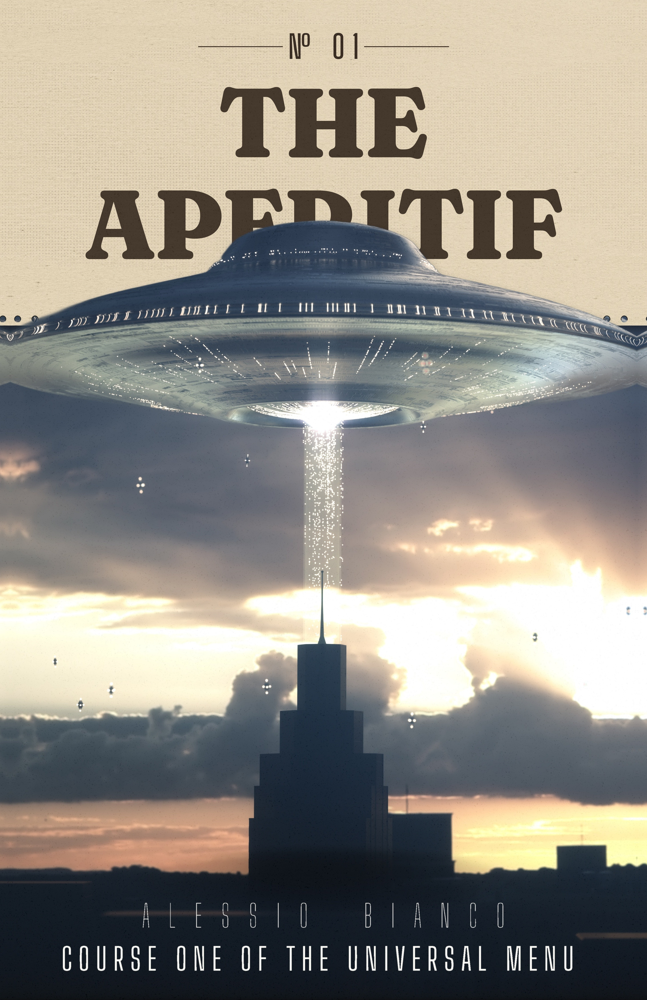

The Aperitif
Les extraterrestres se sont posés devant un restaurant en faillite et ont fait du cuisinier de nuit l'ambassadeur de l'humanité. Leur civilisation est parfaite. Il y manque une chose.
Il a joué la Terre sur une rébellion vieille de neuf siècles — sans demander contre quoi, au juste, les rebelles se rebellent.

Quatorze mois après l'atterrissage, la Terre est en pleine floraison : les remèdes fonctionnent, l'espérance de vie grimpe, les loteries de volontaires sont sursouscrites — et Max Reznik, l'homme qui a dit la vérité à son espèce, n'est plus qu'un mème éventé. L'Hospitalité a trouvé son avertissement charmant : la passion d'un Maître pour son ingrédient honore la table. Aussi, lorsque les audiences d'admission de la Terre s'ouvrent au Concourse, siège de la Guilde des Critiques, Max s'y rend — et découvre, dans les couloirs de service de la politique extraterrestre, une rébellion vieille de neuf siècles contre les mangeurs de mondes. Il y joue la Terre — sans armée, sans levier, sans crédit : seulement un étal, un couteau, et une querelle qu'il peut élargir. Le plat du milieu du Menu universel est la satire de Bianco à son plus tranchant : un livre sur l'art de lire la salle, dans une salle où l'on est soi-même le menu.
Livre 2 de « The Universal Menu »
Ils n'ont jamais menti. Nous n'avons jamais lu le menu.
The Universal Menu

Les extraterrestres se sont posés devant un restaurant en faillite et ont fait du cuisinier de nuit l'ambassadeur de l'humanité. Leur civilisation est parfaite. Il y manque une chose.
Il a joué la Terre sur une rébellion vieille de neuf siècles — sans demander contre quoi, au juste, les rebelles se rebellent.

Si l'on ne peut impressionner le critique, qu'on lui fasse renvoyer le plat.
Ouvre le livre — le monde est dedans.
Parcourir le rayon · 43